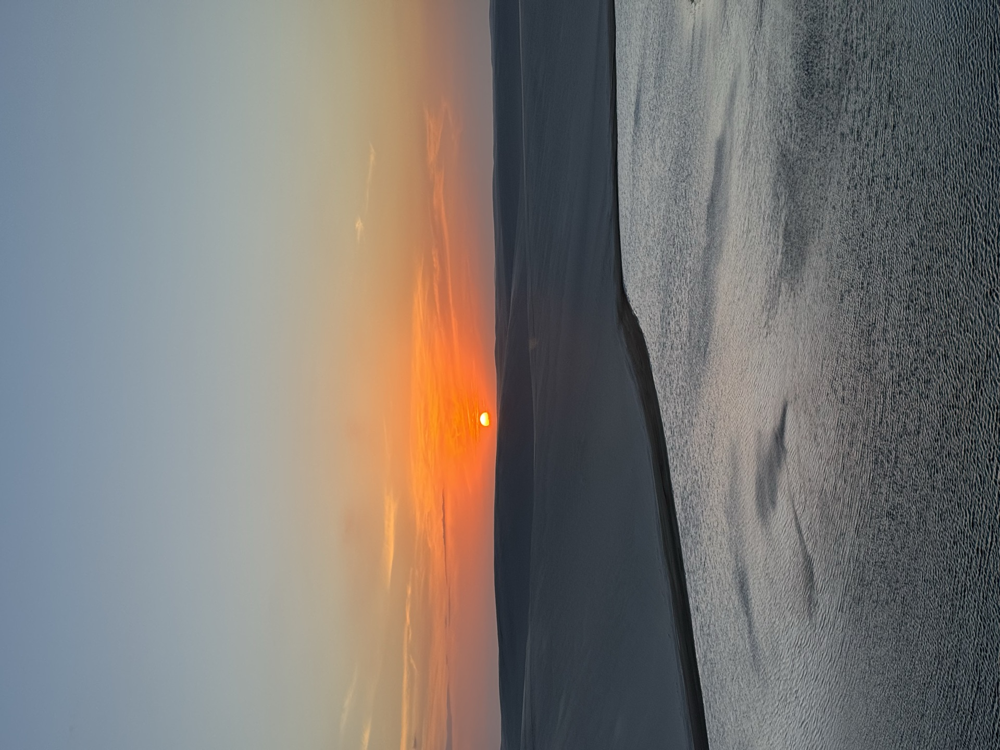

01Passeios privativos às lagoas
Circuito pelas lagoas do lado de Atins do Parque Nacional, com paradas livres para banho, fotos e aquele silêncio que só existe no meio das dunas. Roteiro e horário ajustados ao seu grupo.
Conhecer as lagoas